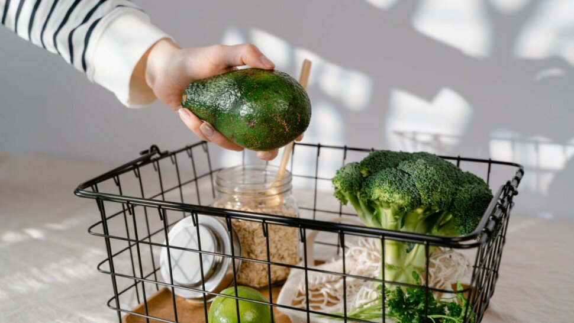

Les aliments à privilégier et ceux à éviter en cas d'obésité

L'obésité est un problème de santé publique majeur qui touche une part croissante de la population mondiale [1].
En effet, les personnes souffrant d'obésité sont à risque de développer des maladies chroniques telles que le diabète de type 2, les maladies cardiovasculaires et certains types de cancer [2]. Face à cette réalité, il est essentiel d'adopter des stratégies de prévention et de gestion de l'obésité, dont l'alimentation joue un rôle primordial [3].
Ainsi, cet article se propose de fournir des recommandations alimentaires spécifiques aux personnes souffrant d'obésité ou souhaitant éviter de la développer, en mettant l'accent sur les aliments à privilégier et ceux à éviter.
Pour parvenir à une alimentation adaptée à la prévention et à la gestion de l'obésité, il est important de se baser sur des données scientifiques solides. Plusieurs études ont montré que la consommation régulière de fruits et légumes, riches en vitamines, minéraux et fibres, est associée à une diminution du risque d'obésité [4].
De même, les protéines maigres, les glucides complexes et les bonnes graisses sont des éléments clés à inclure dans un régime alimentaire équilibré pour les personnes en surpoids ou obèses [3].
En revanche, certains aliments sont reconnus pour leur impact négatif sur la santé et sont donc à éviter. Il s'agit notamment des aliments riches en sucre, en graisses saturées et en acides gras trans, qui peuvent favoriser la prise de poids et aggraver les problèmes de santé liés à l'obésité [2]. Les aliments ultra-transformés et ceux à index glycémique élevé sont également déconseillés, car ils peuvent engendrer une consommation excessive de calories et perturber l'équilibre glycémique [5].
Cet article abordera également des conseils pratiques pour adapter son alimentation en tenant compte de la planification des repas, des astuces pour cuisiner sainement, de la gestion des portions et de l'hydratation. En suivant ces recommandations et en adoptant un mode de vie actif, les personnes souffrant d'obésité ou à risque pourront progresser vers un poids santé et réduire les complications associées à cette condition. Il est toutefois essentiel de rappeler que chaque individu est unique et qu'il est recommandé de consulter un professionnel de santé pour un accompagnement personnalisé.

Les aliments à privilégier en cas d'obésité

- Les fruits et légumes
Les fruits et légumes sont des aliments essentiels pour la prévention et la gestion de l'obésité en raison de leur richesse en vitamines, minéraux et fibres [6]. Les fibres contribuent à la satiété, ce qui aide à réduire la consommation de calories et à prévenir la prise de poids [7].
De plus, les fruits et légumes sont généralement faibles en calories, ce qui permet de les consommer en quantité sans craindre de déséquilibre énergétique. Il est recommandé de consommer au moins cinq portions de fruits et légumes par jour, en privilégiant une grande variété de couleurs pour maximiser les apports en nutriments [8].
Parmi les fruits et légumes à privilégier, on peut citer les légumes à feuilles vertes (épinards, chou frisé, blettes), les légumes crucifères (brocoli, chou-fleur, choux de Bruxelles), les baies (fraises, myrtilles, framboises) et les agrumes (oranges, pamplemousses, citrons).
- Les protéines maigres
Les protéines jouent un rôle important dans la gestion du poids, car elles favorisent la satiété et aident à maintenir la masse musculaire lors de la perte de poids [9].
Il est donc crucial d'inclure des sources de protéines maigres dans son alimentation pour lutter contre l'obésité. Les protéines maigres sont celles qui contiennent peu de matières grasses, comme la volaille sans peau, le poisson, les œufs, les légumineuses (lentilles, pois chiches, haricots) et le tofu.
Les poissons gras tels que le saumon, le maquereau, les sardines et les anchois sont également à privilégier, car ils contiennent des acides gras oméga-3 qui possèdent des propriétés anti-inflammatoires et cardio-protectrices [10]. Les recommandations actuelles suggèrent de consommer du poisson gras au moins deux fois par semaine.
- Les glucides complexes
Les glucides complexes sont des aliments qui ont un impact modéré sur la glycémie, contrairement aux glucides simples qui provoquent des pics de glycémie et favorisent le stockage des graisses [11].
La consommation de glucides complexes permet de maintenir une satiété durable et d'éviter les fringales.
Parmi les sources de glucides complexes, on trouve les céréales complètes (riz brun, quinoa, farro), les légumineuses et les légumes racines (patate douce, panais, navet). Il est recommandé de remplacer progressivement les glucides simples (pain blanc, pâtes blanches, riz blanc) par des glucides complexes pour améliorer la qualité de son alimentation et favoriser la perte de poids [12].
Les bonnes graisses
Les aliments à éviter en cas d'obésité
Conseils pratiques pour adapter son alimentation

- Planifier ses repas
Planifier ses repas à l'avance peut aider à incorporer des aliments sains dans son alimentation et à éviter les choix impulsifs moins sains [21].
Prenez le temps de planifier vos repas pour la semaine, en incluant des fruits et légumes, des protéines maigres, des glucides complexes et des bonnes graisses.
Faire une liste de courses en fonction de votre plan de repas et vous y tenir peut également vous aider à rester concentré sur vos objectifs nutritionnels.
- Préparer des repas maison
La préparation de repas maison permet de contrôler les ingrédients et les portions, et de limiter les aliments ultra-transformés [22].
Essayez de cuisiner davantage à la maison et d'expérimenter avec des recettes saines. Les plats mijotés, les salades composées et les repas en bols sont des options pratiques et nutritives qui peuvent être préparées à l'avance et conservées au réfrigérateur pour les jours où vous manquez de temps.
- Manger en pleine conscience
La pratique de la pleine conscience pendant les repas peut vous aider à être plus attentif à votre faim et à votre satiété, à mieux apprécier les saveurs et les textures des aliments, et à réduire la suralimentation [23].
Prenez le temps de manger lentement, de bien mastiquer et de savourer chaque bouchée. Évitez les distractions, comme la télévision ou les appareils électroniques, qui peuvent vous détourner de votre expérience alimentaire.
- Lire les étiquettes nutritionnelles
Lire les étiquettes nutritionnelles des produits alimentaires vous permet de faire des choix plus éclairés et de limiter les aliments à éviter [24].
Recherchez les informations sur les calories, les graisses saturées, les sucres ajoutés et le sel, et privilégiez les produits qui contiennent des ingrédients simples et reconnaissables.
Adopter une approche équilibrée et flexible
Conclusion
Sources
- World Health Organization. (2020). Obesity and overweight.
- Afshin, A., Forouzanfar, M. H., Reitsma, M. B., Sur, P., Estep, K., Lee, A., ... & Micha, R. (2017). Health effects of overweight and obesity in 195 countries over 25 years. New England Journal of Medicine, 377(1), 13-27.
- Mozaffarian, D. (2016). Dietary and policy priorities for cardiovascular disease, diabetes, and obesity: a comprehensive review. Circulation.
- Boeing, H., Bechthold, A., Bub, A., Ellinger, S., Haller, D., Kroke, A., ... & Watzl, B. (2012). Critical review: vegetables and fruit in the prevention of chronic diseases. European journal of nutrition, 51(6), 637-663.
- Slavin, J. L. (2005). Dietary fiber and body weight. Nutrition, 21(3), 411-418.
- World Health Organization. (2003). Diet, nutrition, and the prevention of chronic diseases: report of a joint WHO/FAO expert consultation (No. 916). World Health Organization.
- Pasiakos, S. M., Cao, J. J., Margolis, L. M., Sauter, E. R., Whigham, L. D., McClung, J. P., ... & Young, A. J. (2013). Effects of high-protein diets on fat-free mass and muscle protein synthesis following weight loss: a randomized controlled trial. The FASEB Journal, 27(9), 3837-3847.
- Mozaffarian, D., & Wu, J. H. Y. (2011). Omega-3 fatty acids and cardiovascular disease: effects on risk factors, molecular pathways, and clinical events. Journal of the American College of Cardiology, 58(20), 2047-2067.
- Ludwig, D. S. (2002). The glycemic index: physiological mechanisms relating to obesity, diabetes, and cardiovascular disease. JAMA, 287(18), 2414-2423.
- American Diabetes Association. (2014). Foundations of care: education.
- Malik, V. S., Pan, A., Willett, W. C., & Hu, F. B. (2013). Sugar-sweetened beverages and weight gain in children and adults: a systematic review and meta-analysis. The American journal of clinical nutrition, 98(4), 1084-1102.
- Stanhope, K. L. (2016). Sugar consumption, metabolic disease and obesity: The state of the controversy. Critical reviews in clinical laboratory sciences, 53(1), 52-67.
- Micha, R., & Mozaffarian, D. (2009). Saturated fat and cardiometabolic risk factors, coronary heart disease, stroke, and diabetes: a fresh look at the evidence. Lipids, 44(10), 887-902.
- Monteiro, C. A., Cannon, G., Levy, R. B., Moubarac, J. C., Jaime, P., Martins, A. P., ... & Louzada, M. L. (2016). NOVA. The star shines bright. World Nutrition, 7(1-3), 28-38.
- Fiolet, T., Srour, B., Sellem, L., Kesse-Guyot, E., Allès, B., Méjean, C., ... & Hercberg, S. (2018). Consumption of ultra-processed foods and cancer risk: results from NutriNet-Santé prospective cohort. bmj, 360, k322.
- Juul, F., & Hemmingsson, E. (2015). Trends in consumption of ultra-processed foods and obesity in Sweden between 1960 and 2010. Public health nutrition, 18(17), 3096-3107.
- Barclay, A. W., Petocz, P., McMillan-Price, J., Flood, V. M., Prvan, T., Mitchell, P., & Brand-Miller, J. C. (2008). Glycemic index, glycemic load, and chronic disease risk—a meta-analysis of observational studies. The American journal of clinical nutrition, 87(3), 627-637.
- Wing, R. R., & Phelan, S. (2005). Long-term weight loss maintenance. The American journal of clinical nutrition, 82(1), 222S-225S.
- Mozaffarian, D., Hao, T., Rimm, E. B., Willett, W. C., & Hu, F. B. (2011). Changes in diet and lifestyle and long-term weight gain in women and men. New England Journal of Medicine, 364(25), 2392-2404.
- Alencar, M. K., Johnson, K., Mullur, R., Gray, V., Gutierrez, E., & Korosteleva, O. (2019). The efficacy of a telemedicine-based weight loss program with video conference health coaching support. Journal of telemedicine and telecare, 25(3), 151-157.